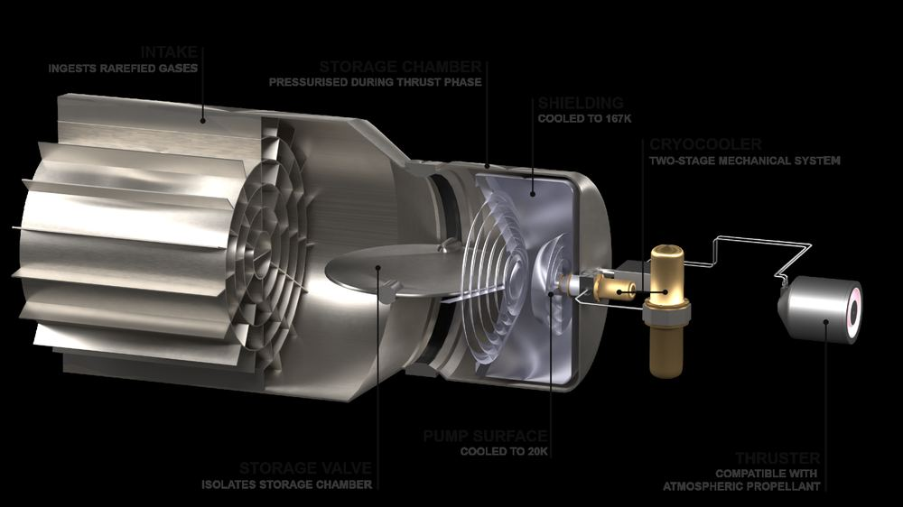
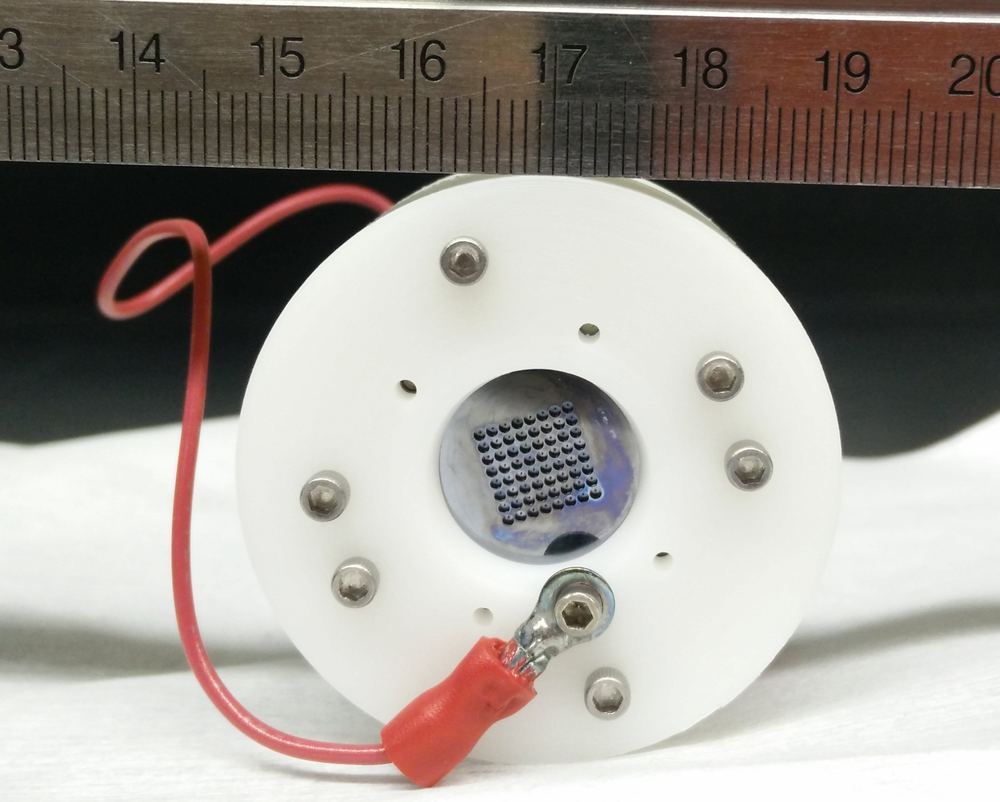
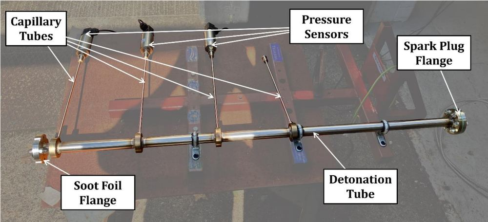
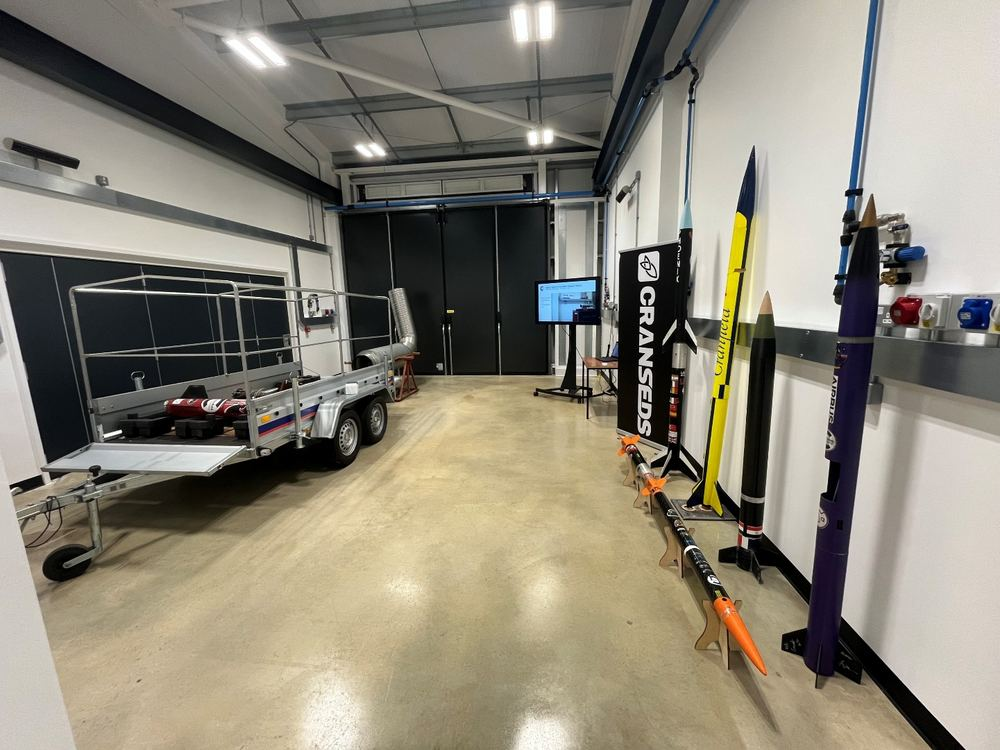

While electric propulsion is CSPL's predominant focus, chemical and nuclear propulsion research runs alongside it, from detonation-based engines to liquid rockets fired in Cranfield's own test warehouse.
CSPL's largest body of work lies in electric propulsion: precision, low-thrust systems for small satellites, built around the physics of electrosprays, and expanded into other areas, such as novel propulsion architectures to overcome the challenges of Air-Breathing Electric Propulsion or to identify molecular alternatives to noble-gas propellants.

A cryopump-based intake for Air-Breathing Electric Propulsion that stores atmospheric gas between orbits, decoupling collection from thrust.

Multiplexed emitter arrays and low-cost porous materials that simplify manufacturing without sacrificing performance.
Neural networks trained on mass-spectrometry data predict how novel molecular propellants will ionise.
An electrospray thruster feeds a conductive liquid to a needle-like emitter opposite an extractor electrode. Under the right electric field, surface tension and electrostatic stress pull the liquid into a Taylor cone, from which a jet of charged droplets and ions is accelerated, producing thrust. However, how to produce pure ion sprays without neutrals remains unclear.
Metals are a simple, storable alternative propellant route for small satellites, but their efficiency can be meagre. This project intends to increase the overall efficiency of plasma thrusters for Smallsats.
Read more →To complement research on alternative propellants (either rarefied air for ABEP or molecular), a modular HET prototype capable of testing various geometries and operating conditions is being developed.
Several of these projects began as MSc theses; see how student research grows into full CSPL programmes.
Chemical propulsion research at CSPL runs from reduced-order models through to hardware in Cranfield's own test warehouse, spanning detonation-based combustion, cryogenic propellant storage, and charge-enhanced injection.

Reduced-order and CFD models feed directly into Cranfield's own Small Annular RDE (SARDE), while an experimental rig tests predetonator tubes. RDEs promise 6–15% gains in specific impulse, self-pressurisation, and smaller, simpler combustors than conventional rocket engines.

Under the UK Space Agency's R2T2 programme, CSPL investigates safe long-duration storage of cryo-compressed hydrogen — the highest-performing chemical propellant available — as a step towards a reusable lunar propellant supply chain. Read the full project →
Alongside this, the student-built Cyclone liquid rocket engine — a 1.5 kN IPA/NOx design — is tested in the same warehouse, alongside cold gas thrusters, monopropellant systems and charge-enhanced electro-fluidic injectors that use electric charge to improve fuel/oxidiser mixing.
CSPL welcomes enquiries from prospective research students, industry partners and fellow academics working across electric and chemical propulsion.